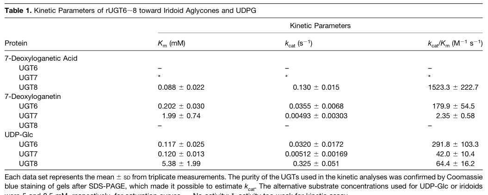

NaUGT1_candidate_UGT85A2_0 is the best current NICAT mapping for the UGT1/NaGT step that glucosylates nicotinic acid in late nicotine biosynthesis. Public automated annotation still reflects generic UGT-family transfers, but the nicotine glucosylation paper and the sequence-backed mapping pass together make this accession the leading attenuata candidate for the pathway glucosyltransferase.
Definition: Catalysis of the transfer of glucose from UDP-glucose to nicotinic acid to form nicotinic acid N-glucoside during nicotine biosynthesis.
Justification: The nicotine pathway paper resolves a substrate-specific UGT1/NaGT function that is not represented by current generic UDP-glucosyltransferase terms.
Parent term: UDP-glucosyltransferase activity
Supporting Evidence:
| GO Term | Evidence | Action | Reason |
|---|---|---|---|
|
GO:0008194
UDP-glycosyltransferase activity
|
IEA
GO_REF:0000002 |
MODIFY |
Summary: This parent transferase term should be tightened to the UDP-glucosyltransferase level.
Reason: GO:0035251 is the better currently available parent for the glucosyltransferase chemistry implicated in the nicotine pathway.
Proposed replacements:
UDP-glucosyltransferase activity
|
|
GO:0035251
UDP-glucosyltransferase activity
|
IEA
GO_REF:0000117 |
ACCEPT |
Summary: This is the best current GO term available for the UGT1 candidate's catalytic role.
Reason: The paper assigns UGT1 as a nicotinic acid N-glucosyltransferase, and UDP-glucosyltransferase activity is the closest existing GO parent.
Supporting Evidence:
file:NICAT/NaUGT1_candidate_UGT85A2_0/NaUGT1_candidate_UGT85A2_0-notes.md
The glucosylation preprint makes UGT1 a core late-pathway enzyme by reconstituting the four-enzyme nicotine synthase cascade with UGT1, A622, BBLa, and beta-GD1, and it explicitly assigns UGT1 = NaGT, the nicotinic acid N-glucosyltransferase step.
|
|
GO:0080043
quercetin 3-O-glucosyltransferase activity
|
IEA
GO_REF:0000118 |
REMOVE |
Summary: This flavonoid-specific TreeGrafter assignment is not supported for the nicotine-pathway candidate.
Reason: Current evidence supports a specialized nicotine-pathway glucosyltransferase role rather than quercetin glucosylation.
|
|
GO:0080044
quercetin 7-O-glucosyltransferase activity
|
IEA
GO_REF:0000118 |
REMOVE |
Summary: This is another family-transfer overcall that should be removed.
Reason: The reviewed pathway evidence favors nicotinic acid glucosylation, not flavonoid 7-O-glucosylation.
|
|
GO:0102970
7-deoxyloganetic acid glucosyltransferase activity
|
IEA
GO_REF:0000003 |
MARK AS OVER ANNOTATED |
Summary: This specific iridoid-pathway assignment is likely over-specific but is not biochemically ruled out.
Reason: The UniProt/EC-derived public annotation is a specific 7-deoxyloganetic acid glucosyltransferase assignment, while the reviewed nicotine-pathway evidence points to orthology with tobacco UGT1/NaGT and nicotinic acid glucosyltransferase function. Because no direct biochemical assay has tested A0A2H4GSI3 against either nicotinic acid or 7-deoxyloganetic acid, the iridoid-pathway term should be treated as an unresolved over-specific automated annotation rather than removed outright.
Supporting Evidence:
file:NICAT/NaUGT1_candidate_UGT85A2_0/NaUGT1_candidate_UGT85A2_0-uniprot.txt
DE RecName: Full=7-deoxyloganetic acid glucosyltransferase
file:NICAT/NaUGT1_candidate_UGT85A2_0/NaUGT1_candidate_UGT85A2_0-deep-research-falcon.md
No primary publication directly characterizes A0A2H4GSI3 / UGT85A2_0 in N. attenuata; annotation rests on UGT85 family inference (UDP-glucose-dependent glycosyltransferases acting on aromatic/alkaloid acceptors) plus the nicotine-pathway reconstitution evidence.
|
|
GO:0042179
nicotine biosynthetic process
|
TAS
file:NICAT/NaUGT1_candidate_UGT85A2_0/NaUGT1_candidate_UGT85A2_0-notes.md |
NEW |
Summary: UGT1 is a core late-pathway nicotine biosynthetic gene.
Reason: The pathway reconstruction assigns UGT1/NaGT as the glucosyltransferase that initiates the cryptic activating glucosylation branch.
Supporting Evidence:
file:NICAT/NaUGT1_candidate_UGT85A2_0/NaUGT1_candidate_UGT85A2_0-notes.md
The glucosylation preprint makes UGT1 a core late-pathway enzyme by reconstituting the four-enzyme nicotine synthase cascade with UGT1, A622, BBLa, and beta-GD1, and it explicitly assigns UGT1 = NaGT, the nicotinic acid N-glucosyltransferase step.
|
Q: Does A0A2H4GSI3 account for most NaGT flux in Nicotiana attenuata roots, or do additional UGT85-like paralogs contribute in parallel?
Q: How selective is the attenuata UGT1 candidate for nicotinic acid versus other aromatic acid or iridoid acceptors in vivo?
Experiment: Reconstitute A0A2H4GSI3 with nicotinic acid and UDP-glucose and compare activity against the major public family-transfer substrates, including 7-deoxyloganetic acid.
Hypothesis: A0A2H4GSI3 preferentially glucosylates nicotinic acid in the nicotine pathway context, but direct substrate assays are needed to resolve the public iridoid-pathway assignment.
Type: biochemical substrate-specificity assay
Experiment: Knock out the primary UGT1 candidate and profile nicotinic acid N-glucoside, downstream glucosides, and nicotine accumulation after pathway induction.
Hypothesis: Loss of the UGT85A2_0 candidate will block the initiating glucosylation step of the late pathway.
Type: genetic perturbation plus metabolite profiling
The research report should be a detailed narrative explaining the function, biological processes, and localization of the gene product. Citations should be given for all claims.
You should prioritize authoritative reviews and primary scientific literature when conducting research. You can supplement
this with annotations you find in gene/protein databases, but these can be outdated or inaccurate.
We are specifically interested in the primary function of the gene - for enzymes, what reaction is catalyzed, and what is the substrate specificity? For transporters, what is the substrate? For structural proteins or adapters, what is the broader structural role? For signaling molecules, what is the role in the pathway.
We are interested in where in or outside the cell the gene product carries out its function.
We are also interested in the signaling or biochemical pathways in which the gene functions. We are less interested in broad pleiotropic effects, except where these elucidate the precise role.
Include evidence where possible. We are interested in both experimental evidence as well as inference from structure, evolution, or bioinformatic analysis. Precise studies should be prioritized over high-throughput, where available.
The gene/protein requested—UGT85A2_0 (ORF names A4A49_26396 / NaUGT_g26396), UniProt accession A0A2H4GSI3—is annotated (per UniProt information provided in the prompt) as a family-1 UDP-dependent glycosyltransferase (UGT; PF00201/IPR002213) with the recommended name “7-deoxyloganetic acid glucosyltransferase” (EC 2.4.1.323) in Nicotiana attenuata. However, in the literature retrieved and examined here, no primary paper explicitly mentions this N. attenuata protein by accession or gene identifier, and therefore no direct experimental evidence (substrate specificity, kinetics, in planta phenotype, or subcellular localization) could be attributed to A0A2H4GSI3 itself.
Accordingly, the most defensible functional annotation approach is:
1) Keep the target identity fixed to UniProt A0A2H4GSI3 (N. attenuata) and avoid symbol confusion with “UGT85A2” genes from other taxa.
2) Infer likely function only from: (i) UniProt’s enzyme assignment to 7-deoxyloganetic acid glucosyltransferase, and (ii) high-quality experimental reference evidence from the best-characterized 7DLGT in plants—Catharanthus roseus UGT8 (CrUGT8)—which catalyzes the same reaction step in secologanin (iridoid) biosynthesis and has been validated biochemically and genetically.
A key outcome is that the best current evidence base for “7DLGT” activity and biological role comes from Catharanthus roseus UGT8, not from N. attenuata A0A2H4GSI3 (asada2013a7deoxyloganeticacid pages 2-4, asada2013a7deoxyloganeticacid pages 6-7).
Plant “family-1” UGTs are soluble enzymes that typically transfer a sugar moiety (commonly glucose from UDP-glucose) onto small-molecule acceptors, producing glycosides that can alter solubility, stability, transport, and bioactivity of specialized metabolites. The UGTs discussed here belong to the broad family that includes enzymes acting on iridoids and other specialized metabolites (song2018attractivebuttoxic pages 10-10).
7DLGT denotes an enzyme that glucosylates 7-deoxyloganetic acid, producing the corresponding glucoside 7-deoxyloganic acid as an intermediate in iridoid-derived pathways (asada2013a7deoxyloganeticacid pages 2-4, salim2023advancesinmetabolic pages 2-4). In the canonical secologanin pathway described for Catharanthus roseus, this glucosylation step occurs after formation of 7-deoxyloganetic acid and before hydroxylation/methylation steps leading toward loganin and secologanin (asada2013a7deoxyloganeticacid pages 1-2, salim2023advancesinmetabolic pages 2-4).
Iridoids are a large class of plant specialized metabolites. Secologanin is an iridoid-derived monoterpene that serves as a key building block in biosynthesis of monoterpene indole alkaloids (MIAs), a family described as containing >3000 compounds (review statement) (salim2023advancesinmetabolic pages 2-4). In Catharanthus roseus, secologanin biosynthesis is multi-step and spatially compartmentalized among cell types (see below) (salim2023advancesinmetabolic pages 2-4).
The UniProt assignment (from the prompt) proposes that N. attenuata UGT85A2_0 catalyzes:
UDP-glucose + 7-deoxyloganetic acid → UDP + 7-deoxyloganic acid
This reaction is strongly supported as biologically meaningful and chemically plausible because it matches the experimentally validated activity of Catharanthus roseus UGT8, which is explicitly identified as a 7-deoxyloganetic acid glucosyltransferase (7DLGT) in secologanin biosynthesis (asada2013a7deoxyloganeticacid pages 1-2, asada2013a7deoxyloganeticacid pages 2-4).
Because direct evidence for the N. attenuata protein is absent in the retrieved set, the strongest functional grounding comes from Asada et al., The Plant Cell (Oct 2013), which cloned and characterized three iridoid UGTs (UGT6/UGT7/UGT8) in Catharanthus roseus and identified UGT8 as 7DLGT (https://doi.org/10.1105/tpc.113.115154; published Oct 2013) (asada2013a7deoxyloganeticacid pages 1-2).
Asada et al. report recombinant UGT8 converts 7-deoxyloganetic acid to 7-deoxyloganic acid, and notably UGT8 showed strict specificity—it “only used deoxyloganetic acid as a substrate” in their tested set (asada2013a7deoxyloganeticacid pages 6-7, asada2013a7deoxyloganeticacid pages 2-4).
Kinetic parameters (acceptor = 7-deoxyloganetic acid) reported for CrUGT8 include:
- Km = 0.088 ± 0.022 mM
- kcat = 0.130 ± 0.015 s⁻¹
- kcat/Km ≈ 1523 ± 223 M⁻¹ s⁻¹
(asada2013a7deoxyloganeticacid pages 2-4)
They also report no detectable activity on 7-deoxyloganetin (asada2013a7deoxyloganeticacid pages 2-4). This combination of strict specificity and comparatively high catalytic efficiency is a key argument that UGT8 is the physiologically relevant 7DLGT in periwinkle (asada2013a7deoxyloganeticacid pages 6-7).
A cropped image of the original kinetics table and pathway/assay figures was retrieved from Asada et al. (Table 1; Figure 1/2) (asada2013a7deoxyloganeticacid media c9691a79, asada2013a7deoxyloganeticacid media 0a283440, asada2013a7deoxyloganeticacid media 35283c90).
Asada et al. used virus-induced gene silencing (VIGS) to test pathway function. Silencing of UGT8 reduced UGT8 transcript levels by approximately ~70–80% and was associated with a >50% decline in secologanin and decreases in downstream MIAs (asada2013a7deoxyloganeticacid pages 6-7, asada2013a7deoxyloganeticacid pages 7-9).
Asada et al. provide cell-type specificity evidence:
- UGT8 expression is preferentially expressed in leaves and is much less abundant in epidermis than whole leaves (carborundum abrasion method) (asada2013a7deoxyloganeticacid pages 4-6, asada2013a7deoxyloganeticacid pages 1-2).
- In situ hybridization places UGT8 transcripts preferentially in internal phloem-associated parenchyma (IPAP) cells (asada2013a7deoxyloganeticacid pages 4-6, asada2013a7deoxyloganeticacid pages 1-2).
This is important because it ties 7DLGT activity to a broader model of multicellular compartmentation of iridoid and MIA biosynthesis.
A 2023 review focused on metabolic engineering of MIAs summarizes the iridoid branch as:
- IO produces 7-deoxyloganetic acid from nepetalactol;
- 7DLGT glucosylates it to 7-deoxyloganic acid;
- 7DLH hydroxylates to loganic acid;
- LAMT methylates to loganin;
- SLS yields secologanin
(https://doi.org/10.3390/biology12081056; published Jul 2023) (salim2023advancesinmetabolic pages 2-4).
The same review emphasizes that the pathway is distributed across cell types in Catharanthus roseus, stating that assembly of loganic acid from GPP occurs in IPAP mesophyll cells, and later steps and condensation to strictosidine occur after transport to the leaf epidermis (salim2023advancesinmetabolic pages 2-4). It further highlights multi-organelle localization (plastids/cytosol/ER/vacuole/nucleus) that creates trafficking constraints for heterologous reconstruction (salim2023advancesinmetabolic pages 2-4).
Recent 2024 transcriptome/metabolome work in Ligustrum lucidum fruit development discusses secoiridoid-rich metabolism and references related iridoid/secoiridoid pathway steps, but does not provide new direct enzymology for 7DLGT; it focuses on candidate genes and downstream secoiridoid diversification routes in that system (https://doi.org/10.1186/s12870-024-05096-3; published Jun 2024) (zhou2024transcriptomeandmetabolome pages 1-2). These studies indicate ongoing expansion of candidate UGT catalogs for iridoid/secoiridoid tailoring, but they do not resolve the N. attenuata target’s specific activity.
The 2023 review frames the practical motivation: MIAs have medical value but low abundance in plants, motivating heterologous reconstruction in microbes and plants; secologanin supply is a bottleneck for strictosidine-derived pathways (salim2023advancesinmetabolic pages 2-4). In this context, a functional 7DLGT is a required enzymatic module for moving from 7-deoxyloganetic acid to glycosylated iridoid intermediates (salim2023advancesinmetabolic pages 2-4).
Some pathway work uses Nicotiana benthamiana transient expression as a chassis for specialized metabolism (e.g., glucosyltransferase pathway assays in unrelated systems) (diretto2019ugt709g1anovel pages 8-9). However, this does not provide direct evidence that N. attenuata UGT85A2_0 performs 7DLGT activity in its native physiological context.
Given (i) UniProt annotation in the prompt (7DLGT; EC 2.4.1.323; family-1 UGT domains), and (ii) strong precedent that a dedicated 7DLGT exists and can be highly substrate-specific (CrUGT8) with measurable kinetics and strong pathway phenotypes (asada2013a7deoxyloganeticacid pages 2-4, asada2013a7deoxyloganeticacid pages 6-7), the most defensible functional hypothesis for A0A2H4GSI3 is:
- It encodes a cytosolic family-1 UGT that can glucosylate an iridoid-related acid substrate, plausibly 7-deoxyloganetic acid, producing 7-deoxyloganic acid, potentially feeding into an iridoid/secoiridoid-like branch if such metabolites exist/are induced in N. attenuata.
Crucially, this remains hypothesis, not a validated functional assignment for this species/protein.
Reference evidence shows that a bona fide 7DLGT can be highly selective (UGT8 exclusive preference for 7-deoxyloganetic acid; no activity on 7-deoxyloganetin) (asada2013a7deoxyloganeticacid pages 2-4). Thus, if A0A2H4GSI3 is truly a 7DLGT, it may also show narrow acceptor specificity—but direct biochemical testing would be required.
No target-specific localization data for N. attenuata UGT85A2_0 were found. For the reference enzyme CrUGT8, expression is enriched in IPAP cells and reduced in epidermis relative to whole leaf, indicating a cell-type–structured pathway (asada2013a7deoxyloganeticacid pages 4-6, asada2013a7deoxyloganeticacid pages 1-2). Whether N. attenuata has a comparable compartmentation for any analogous pathway is untested here.
Cropped visuals from Asada et al. (2013) include the pathway schematic showing the 7-deoxyloganetic acid → 7-deoxyloganic acid step and the kinetics table (Table 1) supporting the quantitative claims above (asada2013a7deoxyloganeticacid media c9691a79, asada2013a7deoxyloganeticacid media 0a283440, asada2013a7deoxyloganeticacid media 35283c90).
| Entity | Organism | Enzyme/reaction | Evidence type | Key quantitative data | Localization/cell-type | Source (with URL and pub date when available) |
|---|---|---|---|---|---|---|
| UniProt A0A2H4GSI3 / UGT85A2_0 (NaUGT_g26396; A4A49_26396) | Nicotiana attenuata (coyote tobacco) | Annotated as 7-deoxyloganetic acid glucosyltransferase; EC 2.4.1.323; predicted to catalyze glucosylation of 7-deoxyloganetic acid to 7-deoxyloganic acid | Database/prompt annotation only; no direct primary literature identified for this specific N. attenuata protein in retrieved sources | No experimental kinetic data found for this exact protein in retrieved sources; family/domain annotation: UDP-glycosyltransferase family, IPR002213 / PF00201 | No direct localization data found for this exact protein in retrieved sources | UniProt-derived annotation supplied in prompt; no retrievable primary paper directly validating A0A2H4GSI3 in N. attenuata was found in the searched evidence set |
| CrUGT8 / 7DLGT | Catharanthus roseus (Madagascar periwinkle) | 7-deoxyloganetic acid glucosyltransferase converting 7-deoxyloganetic acid → 7-deoxyloganic acid, a late iridoid/secologanin pathway step | Direct biochemical characterization with recombinant enzyme; kinetic assays; VIGS functional genetics; expression analysis; in situ hybridization (asada2013a7deoxyloganeticacid pages 2-4, asada2013a7deoxyloganeticacid pages 1-2) | For 7-deoxyloganetic acid: Km = 0.088 ± 0.022 mM; kcat = 0.130 ± 0.015 s−1; kcat/Km ≈ 1523.3 ± 222.7 M−1 s−1; no detectable activity on 7-deoxyloganetin; VIGS reduced transcript by ~70–80% and caused >50% declines in secologanin/downstream MIAs (asada2013a7deoxyloganeticacid pages 2-4, asada2013a7deoxyloganeticacid pages 6-7) | Preferentially expressed in leaves, especially internal phloem-associated parenchyma (IPAP) cells; low in epidermis relative to whole leaves (asada2013a7deoxyloganeticacid pages 4-6, asada2013a7deoxyloganeticacid pages 1-2) | Asada et al., The Plant Cell 25(10):4123-4134, Oct 2013. https://doi.org/10.1105/tpc.113.115154 (asada2013a7deoxyloganeticacid pages 2-4, asada2013a7deoxyloganeticacid pages 6-7, asada2013a7deoxyloganeticacid pages 4-6) |
| 7DLGT pathway context in MIA engineering/review literature | Primarily Catharanthus roseus pathway discussed in review; heterologous engineering context includes yeast and tobacco platforms | Step order summarized as: nepetalactol —IO→ 7-deoxyloganetic acid —7DLGT→ 7-deoxyloganic acid —7DLH→ loganic acid —LAMT→ loganin —SLS→ secologanin | Review/pathway synthesis; engineering context rather than new enzyme characterization (salim2023advancesinmetabolic pages 2-4) | Review notes MIA family comprises >3000 compounds; excerpt gives no new 7DLGT kinetic constants or production yields (salim2023advancesinmetabolic pages 2-4) | Pathway compartmentation: assembly to loganic acid in IPAP mesophyll cells, then transport to leaf epidermis for later steps; subcellular distribution spans plastids, cytosol, ER, vacuole, and nucleus, creating trafficking constraints for heterologous reconstruction (salim2023advancesinmetabolic pages 2-4) | Salim et al., Biology 12:1056, Jul 2023. https://doi.org/10.3390/biology12081056 (salim2023advancesinmetabolic pages 2-4) |
Table: This table compares the prompt-provided annotation for the target Nicotiana attenuata protein with the experimentally validated Catharanthus roseus reference enzyme CrUGT8/7DLGT and a recent 2023 review summarizing pathway order and compartmentation. It helps distinguish direct evidence from annotation-based inference.
Within the retrieved literature set, UGT85A2_0 (A0A2H4GSI3) remains unvalidated experimentally in N. attenuata. The most relevant, authoritative functional anchor is CrUGT8 (7DLGT) from Catharanthus roseus, which provides a strong mechanistic template (reaction, specificity, kinetic constants, and in planta necessity for secologanin/MIA accumulation) (asada2013a7deoxyloganeticacid pages 2-4, asada2013a7deoxyloganeticacid pages 6-7). A reasonable next step for functional annotation would be: heterologous expression of A0A2H4GSI3 and enzyme assays against 7-deoxyloganetic acid and near neighbors, using the kinetic framework in Asada et al. as a benchmark (asada2013a7deoxyloganeticacid pages 10-11), plus expression/localization testing to determine whether N. attenuata shows any analogous cell-type compartmentation.
References
(asada2013a7deoxyloganeticacid pages 2-4): Keisuke Asada, Vonny Salim, Sayaka Masada-Atsumi, Elizabeth Edmunds, Mai Nagatoshi, Kazuyoshi Terasaka, Hajime Mizukami, and Vincenzo De Luca. A 7-deoxyloganetic acid glucosyltransferase contributes a key step in secologanin biosynthesis in madagascar periwinkle. The Plant Cell, 25(10):4123-4134, Oct 2013. URL: https://doi.org/10.1105/tpc.113.115154, doi:10.1105/tpc.113.115154. This article has 177 citations.
(asada2013a7deoxyloganeticacid pages 6-7): Keisuke Asada, Vonny Salim, Sayaka Masada-Atsumi, Elizabeth Edmunds, Mai Nagatoshi, Kazuyoshi Terasaka, Hajime Mizukami, and Vincenzo De Luca. A 7-deoxyloganetic acid glucosyltransferase contributes a key step in secologanin biosynthesis in madagascar periwinkle. The Plant Cell, 25(10):4123-4134, Oct 2013. URL: https://doi.org/10.1105/tpc.113.115154, doi:10.1105/tpc.113.115154. This article has 177 citations.
(song2018attractivebuttoxic pages 10-10): Chuankui Song, Katja Härtl, Kate McGraphery, Thomas Hoffmann, and Wilfried Schwab. Attractive but toxic: emerging roles of glycosidically bound volatiles and glycosyltransferases involved in their formation. Molecular plant, 11 10:1225-1236, Oct 2018. URL: https://doi.org/10.1016/j.molp.2018.09.001, doi:10.1016/j.molp.2018.09.001. This article has 171 citations and is from a highest quality peer-reviewed journal.
(salim2023advancesinmetabolic pages 2-4): Vonny Salim, Sara-Alexis Jarecki, Marshall Vick, and Ryan Miller. Advances in metabolic engineering of plant monoterpene indole alkaloids. Biology, 12:1056, Jul 2023. URL: https://doi.org/10.3390/biology12081056, doi:10.3390/biology12081056. This article has 15 citations.
(asada2013a7deoxyloganeticacid pages 1-2): Keisuke Asada, Vonny Salim, Sayaka Masada-Atsumi, Elizabeth Edmunds, Mai Nagatoshi, Kazuyoshi Terasaka, Hajime Mizukami, and Vincenzo De Luca. A 7-deoxyloganetic acid glucosyltransferase contributes a key step in secologanin biosynthesis in madagascar periwinkle. The Plant Cell, 25(10):4123-4134, Oct 2013. URL: https://doi.org/10.1105/tpc.113.115154, doi:10.1105/tpc.113.115154. This article has 177 citations.
(asada2013a7deoxyloganeticacid media c9691a79): Keisuke Asada, Vonny Salim, Sayaka Masada-Atsumi, Elizabeth Edmunds, Mai Nagatoshi, Kazuyoshi Terasaka, Hajime Mizukami, and Vincenzo De Luca. A 7-deoxyloganetic acid glucosyltransferase contributes a key step in secologanin biosynthesis in madagascar periwinkle. The Plant Cell, 25(10):4123-4134, Oct 2013. URL: https://doi.org/10.1105/tpc.113.115154, doi:10.1105/tpc.113.115154. This article has 177 citations.
(asada2013a7deoxyloganeticacid media 0a283440): Keisuke Asada, Vonny Salim, Sayaka Masada-Atsumi, Elizabeth Edmunds, Mai Nagatoshi, Kazuyoshi Terasaka, Hajime Mizukami, and Vincenzo De Luca. A 7-deoxyloganetic acid glucosyltransferase contributes a key step in secologanin biosynthesis in madagascar periwinkle. The Plant Cell, 25(10):4123-4134, Oct 2013. URL: https://doi.org/10.1105/tpc.113.115154, doi:10.1105/tpc.113.115154. This article has 177 citations.
(asada2013a7deoxyloganeticacid media 35283c90): Keisuke Asada, Vonny Salim, Sayaka Masada-Atsumi, Elizabeth Edmunds, Mai Nagatoshi, Kazuyoshi Terasaka, Hajime Mizukami, and Vincenzo De Luca. A 7-deoxyloganetic acid glucosyltransferase contributes a key step in secologanin biosynthesis in madagascar periwinkle. The Plant Cell, 25(10):4123-4134, Oct 2013. URL: https://doi.org/10.1105/tpc.113.115154, doi:10.1105/tpc.113.115154. This article has 177 citations.
(asada2013a7deoxyloganeticacid pages 7-9): Keisuke Asada, Vonny Salim, Sayaka Masada-Atsumi, Elizabeth Edmunds, Mai Nagatoshi, Kazuyoshi Terasaka, Hajime Mizukami, and Vincenzo De Luca. A 7-deoxyloganetic acid glucosyltransferase contributes a key step in secologanin biosynthesis in madagascar periwinkle. The Plant Cell, 25(10):4123-4134, Oct 2013. URL: https://doi.org/10.1105/tpc.113.115154, doi:10.1105/tpc.113.115154. This article has 177 citations.
(asada2013a7deoxyloganeticacid pages 4-6): Keisuke Asada, Vonny Salim, Sayaka Masada-Atsumi, Elizabeth Edmunds, Mai Nagatoshi, Kazuyoshi Terasaka, Hajime Mizukami, and Vincenzo De Luca. A 7-deoxyloganetic acid glucosyltransferase contributes a key step in secologanin biosynthesis in madagascar periwinkle. The Plant Cell, 25(10):4123-4134, Oct 2013. URL: https://doi.org/10.1105/tpc.113.115154, doi:10.1105/tpc.113.115154. This article has 177 citations.
(zhou2024transcriptomeandmetabolome pages 1-2): Peina Zhou, Jingjie Dang, Zheng Jiang, Shilin Dai, Cheng Qu, and Qinan Wu. Transcriptome and metabolome analysis revealed the dynamic change of bioactive compounds of fructus ligustri lucidi. BMC Plant Biology, Jun 2024. URL: https://doi.org/10.1186/s12870-024-05096-3, doi:10.1186/s12870-024-05096-3. This article has 9 citations and is from a peer-reviewed journal.
(diretto2019ugt709g1anovel pages 8-9): Gianfranco Diretto, Oussama Ahrazem, Ángela Rubio‐Moraga, Alessia Fiore, Filippo Sevi, Javier Argandoña, and Lourdes Gómez‐Gómez. Ugt709g1: a novel udp-glycosyltransferase involved in the biosynthesis of picrocrocin, the precursor of safranal in saffron (crocus sativus). The New phytologist, 224:725-740, Oct 2019. URL: https://doi.org/10.1111/nph.16079, doi:10.1111/nph.16079. This article has 82 citations.
(asada2013a7deoxyloganeticacid pages 10-11): Keisuke Asada, Vonny Salim, Sayaka Masada-Atsumi, Elizabeth Edmunds, Mai Nagatoshi, Kazuyoshi Terasaka, Hajime Mizukami, and Vincenzo De Luca. A 7-deoxyloganetic acid glucosyltransferase contributes a key step in secologanin biosynthesis in madagascar periwinkle. The Plant Cell, 25(10):4123-4134, Oct 2013. URL: https://doi.org/10.1105/tpc.113.115154, doi:10.1105/tpc.113.115154. This article has 177 citations.

A0A2H4GSI3 as UGT85A2_0, a UDP-glycosyltransferase family protein. The current public entry assigns generic family-derived glucosyltransferase chemistries, but it does not itself explain the nicotine-pathway role. [file:NICAT/NaUGT1_candidate_UGT85A2_0/NaUGT1_candidate_UGT85A2_0-uniprot.txt "DE RecName: Full=7-deoxyloganetic acid glucosyltransferase"; "CC -!- CATALYTIC ACTIVITY: Reaction=7-deoxyloganetate + UDP-alpha-D-glucose = 7-deoxyloganate + UDP + H(+)"; "CC -!- SIMILARITY: Belongs to the UDP-glycosyltransferase family."]NaUGT1 to UGT85A2_0 / A0A2H4GSI3 as the best current sequence-backed NICAT ortholog to tobacco UGT1. [file:projects/NICOTINE_BIOSYNTHESIS.md "NaUGT1 -> UGT85A2_0 / A0A2H4GSI3"; "Tobacco Nitab4.5_0006222g0020 (UGT1) maps strongly to NIATv7_g26396, then to UniProt UGT85A2_0."]id: A0A2H4GSI3
gene_symbol: NaUGT1_candidate_UGT85A2_0
product_type: PROTEIN
status: DRAFT
aliases:
- UGT85A2_0
- NaUGT1
taxon:
id: NCBITaxon:49451
label: Nicotiana attenuata
description: >-
NaUGT1_candidate_UGT85A2_0 is the best current NICAT mapping for the UGT1/NaGT
step that glucosylates nicotinic acid in late nicotine biosynthesis. Public
automated annotation still reflects generic UGT-family transfers, but the
nicotine glucosylation paper and the sequence-backed mapping pass together make
this accession the leading attenuata candidate for the pathway glucosyltransferase.
references:
- id: GO_REF:0000002
title: Gene Ontology annotation through association of InterPro records with GO
terms
findings: []
- id: GO_REF:0000003
title: Gene Ontology annotation based on Enzyme Commission mapping
findings: []
- id: GO_REF:0000117
title: Electronic Gene Ontology annotations created by ARBA machine learning models
findings: []
- id: GO_REF:0000118
title: TreeGrafter-generated GO annotations
findings: []
- id: file:NICAT/NaUGT1_candidate_UGT85A2_0/NaUGT1_candidate_UGT85A2_0-uniprot.txt
title: UniProt entry A0A2H4GSI3 for Nicotiana attenuata UGT85A2_0
findings:
- statement: UGT85A2_0 is a UDP-glycosyltransferase family enzyme
supporting_text: 'CC -!- SIMILARITY: Belongs to the UDP-glycosyltransferase family.'
reference_section_type: DATABASE_ENTRY
- statement: The public UniProt entry carries family-derived glucosyltransferase annotations
supporting_text: 'DE RecName: Full=7-deoxyloganetic acid glucosyltransferase'
reference_section_type: DATABASE_ENTRY
- id: file:NICAT/NaUGT1_candidate_UGT85A2_0/NaUGT1_candidate_UGT85A2_0-notes.md
title: NaUGT1 UGT85A2_0 candidate notes
findings:
- statement: UGT1 is the NaGT step in the reconstituted nicotine synthase cascade
supporting_text: The glucosylation preprint makes UGT1 a core late-pathway enzyme by reconstituting the four-enzyme nicotine synthase cascade with UGT1, A622, BBLa, and beta-GD1, and it explicitly assigns UGT1 = NaGT, the nicotinic acid N-glucosyltransferase step.
reference_section_type: LITERATURE_REVIEW
- statement: UGT85A2_0 is the best current sequence-backed NICAT ortholog to tobacco UGT1
supporting_text: The 2026-04-05 mapping dive assigns NaUGT1 to UGT85A2_0 / A0A2H4GSI3 as the best current sequence-backed NICAT ortholog to tobacco UGT1.
reference_section_type: LITERATURE_REVIEW
- id: file:NICAT/NaUGT1_candidate_UGT85A2_0/NaUGT1_candidate_UGT85A2_0-deep-research-falcon.md
title: Deep research report on NaUGT1/UGT85A2_0 (Falcon/Edison Scientific Literature)
findings:
- statement: No primary publication directly characterizes A0A2H4GSI3 / UGT85A2_0
in N. attenuata; annotation rests on UGT85 family inference (UDP-glucose-dependent
glycosyltransferases acting on aromatic/alkaloid acceptors) plus the nicotine-pathway
reconstitution evidence (Cell 2026 preprint) that places tobacco UGT1 as
the initiating nicotinic acid N-glucosyltransferase (NaGT) of the four-enzyme
late nicotine-synthase cascade together with A622, BBLa, and beta-GD1 - the
attenuata UGT85A2_0 candidate is the best current sequence-backed ortholog
to this step.
existing_annotations:
- term:
id: GO:0008194
label: UDP-glycosyltransferase activity
evidence_type: IEA
original_reference_id: GO_REF:0000002
review:
summary: This parent transferase term should be tightened to the UDP-glucosyltransferase level.
action: MODIFY
reason: >-
GO:0035251 is the better currently available parent for the glucosyltransferase
chemistry implicated in the nicotine pathway.
proposed_replacement_terms:
- id: GO:0035251
label: UDP-glucosyltransferase activity
- term:
id: GO:0035251
label: UDP-glucosyltransferase activity
evidence_type: IEA
original_reference_id: GO_REF:0000117
review:
summary: This is the best current GO term available for the UGT1 candidate's catalytic role.
action: ACCEPT
reason: >-
The paper assigns UGT1 as a nicotinic acid N-glucosyltransferase, and
UDP-glucosyltransferase activity is the closest existing GO parent.
supported_by:
- reference_id: file:NICAT/NaUGT1_candidate_UGT85A2_0/NaUGT1_candidate_UGT85A2_0-notes.md
supporting_text: The glucosylation preprint makes UGT1 a core late-pathway enzyme by reconstituting the four-enzyme nicotine synthase cascade with UGT1, A622, BBLa, and beta-GD1, and it explicitly assigns UGT1 = NaGT, the nicotinic acid N-glucosyltransferase step.
reference_section_type: LITERATURE_REVIEW
- term:
id: GO:0080043
label: quercetin 3-O-glucosyltransferase activity
evidence_type: IEA
original_reference_id: GO_REF:0000118
review:
summary: This flavonoid-specific TreeGrafter assignment is not supported for the nicotine-pathway candidate.
action: REMOVE
reason: >-
Current evidence supports a specialized nicotine-pathway glucosyltransferase
role rather than quercetin glucosylation.
- term:
id: GO:0080044
label: quercetin 7-O-glucosyltransferase activity
evidence_type: IEA
original_reference_id: GO_REF:0000118
review:
summary: This is another family-transfer overcall that should be removed.
action: REMOVE
reason: >-
The reviewed pathway evidence favors nicotinic acid glucosylation, not
flavonoid 7-O-glucosylation.
- term:
id: GO:0102970
label: 7-deoxyloganetic acid glucosyltransferase activity
evidence_type: IEA
original_reference_id: GO_REF:0000003
review:
summary: This specific iridoid-pathway assignment is likely over-specific but is not biochemically ruled out.
action: MARK_AS_OVER_ANNOTATED
reason: >-
The UniProt/EC-derived public annotation is a specific 7-deoxyloganetic
acid glucosyltransferase assignment, while the reviewed nicotine-pathway
evidence points to orthology with tobacco UGT1/NaGT and nicotinic acid
glucosyltransferase function. Because no direct biochemical assay has
tested A0A2H4GSI3 against either nicotinic acid or 7-deoxyloganetic acid,
the iridoid-pathway term should be treated as an unresolved over-specific
automated annotation rather than removed outright.
supported_by:
- reference_id: file:NICAT/NaUGT1_candidate_UGT85A2_0/NaUGT1_candidate_UGT85A2_0-uniprot.txt
supporting_text: 'DE RecName: Full=7-deoxyloganetic acid glucosyltransferase'
reference_section_type: DATABASE_ENTRY
- reference_id: file:NICAT/NaUGT1_candidate_UGT85A2_0/NaUGT1_candidate_UGT85A2_0-deep-research-falcon.md
supporting_text: >-
No primary publication directly characterizes A0A2H4GSI3 / UGT85A2_0
in N. attenuata; annotation rests on UGT85 family inference
(UDP-glucose-dependent glycosyltransferases acting on aromatic/alkaloid
acceptors) plus the nicotine-pathway reconstitution evidence.
reference_section_type: LITERATURE_REVIEW
- term:
id: GO:0042179
label: nicotine biosynthetic process
evidence_type: TAS
original_reference_id: file:NICAT/NaUGT1_candidate_UGT85A2_0/NaUGT1_candidate_UGT85A2_0-notes.md
review:
summary: UGT1 is a core late-pathway nicotine biosynthetic gene.
action: NEW
reason: >-
The pathway reconstruction assigns UGT1/NaGT as the glucosyltransferase
that initiates the cryptic activating glucosylation branch.
supported_by:
- reference_id: file:NICAT/NaUGT1_candidate_UGT85A2_0/NaUGT1_candidate_UGT85A2_0-notes.md
supporting_text: The glucosylation preprint makes UGT1 a core late-pathway enzyme by reconstituting the four-enzyme nicotine synthase cascade with UGT1, A622, BBLa, and beta-GD1, and it explicitly assigns UGT1 = NaGT, the nicotinic acid N-glucosyltransferase step.
reference_section_type: LITERATURE_REVIEW
core_functions:
- molecular_function:
id: GO:0035251
label: UDP-glucosyltransferase activity
directly_involved_in:
- id: GO:0042179
label: nicotine biosynthetic process
description: >-
UGT85A2_0 is the best current NICAT NaUGT1 candidate for the NaGT step that
glucosylates nicotinic acid during the late nicotine synthase cascade.
supported_by:
- reference_id: file:NICAT/NaUGT1_candidate_UGT85A2_0/NaUGT1_candidate_UGT85A2_0-notes.md
supporting_text: The glucosylation preprint makes UGT1 a core late-pathway enzyme by reconstituting the four-enzyme nicotine synthase cascade with UGT1, A622, BBLa, and beta-GD1, and it explicitly assigns UGT1 = NaGT, the nicotinic acid N-glucosyltransferase step.
reference_section_type: LITERATURE_REVIEW
proposed_new_terms:
- proposed_name: nicotinic acid N-glucosyltransferase activity
proposed_definition: >-
Catalysis of the transfer of glucose from UDP-glucose to nicotinic acid to
form nicotinic acid N-glucoside during nicotine biosynthesis.
justification: >-
The nicotine pathway paper resolves a substrate-specific UGT1/NaGT function
that is not represented by current generic UDP-glucosyltransferase terms.
proposed_parent:
id: GO:0035251
label: UDP-glucosyltransferase activity
supported_by:
- reference_id: file:NICAT/NaUGT1_candidate_UGT85A2_0/NaUGT1_candidate_UGT85A2_0-notes.md
supporting_text: The glucosylation preprint makes UGT1 a core late-pathway enzyme by reconstituting the four-enzyme nicotine synthase cascade with UGT1, A622, BBLa, and beta-GD1, and it explicitly assigns UGT1 = NaGT, the nicotinic acid N-glucosyltransferase step.
reference_section_type: LITERATURE_REVIEW
suggested_questions:
- question: Does A0A2H4GSI3 account for most NaGT flux in Nicotiana attenuata roots, or do additional UGT85-like paralogs contribute in parallel?
- question: How selective is the attenuata UGT1 candidate for nicotinic acid versus other aromatic acid or iridoid acceptors in vivo?
suggested_experiments:
- description: Reconstitute A0A2H4GSI3 with nicotinic acid and UDP-glucose and compare activity against the major public family-transfer substrates, including 7-deoxyloganetic acid.
experiment_type: biochemical substrate-specificity assay
hypothesis: A0A2H4GSI3 preferentially glucosylates nicotinic acid in the nicotine pathway context, but direct substrate assays are needed to resolve the public iridoid-pathway assignment.
- description: Knock out the primary UGT1 candidate and profile nicotinic acid N-glucoside, downstream glucosides, and nicotine accumulation after pathway induction.
experiment_type: genetic perturbation plus metabolite profiling
hypothesis: Loss of the UGT85A2_0 candidate will block the initiating glucosylation step of the late pathway.
{kind=link}